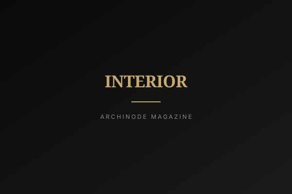

올해 한국 인테리어 자재 시장에서 가장 빠르게 자라는 라인들을 보면 조용한 패턴이 드러난다. 제품이 사람이 아니라 반려동물을 기준으로 설계된다. 발톱 스크래치에 견디도록 만든 고내구성 벽지 — KCC신한벽지 '월가드', LX하우시스 '디아망 포티스', 서울벽지 '카라 시그니처' — 가 프리미엄 구간을 끌어올리는 카테고리에 들어 있다. 나란히, 한때 고급 개조였던 자동 중문은 이제 신축 아파트의 기본 옵션으로 전면에 나선다. 둘 다 잡화가 아니다. 함께 보면, 한국의 집이 개나 고양이를 온전한 구성원으로 점점 더 포함하는 가구를 기준으로 다시 설계되고 있다는 신호다.
내구성이라는 새로운 럭셔리
오랫동안 프리미엄 벽지는 질감과 색의 깊이로 경쟁했다. 이제 두 번째 축이 나타났다. 견뎌내는 능력이다. '월가드'나 '디아망 포티스' 같은 라인은 단순한 약속으로 마케팅된다. 고양이가 긁고 개가 기대도 표면이 버틴다. 이것은 소비자에게 의미 있는 재구성이다. 비싼 벽 마감에 대한 오래된 두려움은 반려동물이 1년 안에 망가뜨린다는 것이었고, 그래서 반려가구는 값싸고 교체 쉬운 자재로 밀려났다. 스크래치에 강한 프리미엄 라인은 그 상충을 없앤다. 깊은 무광 마감을 가지면서 동물도 함께 둘 수 있다. 오랫동안 카탈로그의 멋없는 끝자락으로 취급되던 내구성이, 덜이 아니라 더 쓸 이유로 재배치되고 있다.

자동 중문은 사실 문에 관한 것이 아니었다
자동 중문의 부상은 관련된 이야기를 들려준다. 편의로 팔리지만 — 양손 가득 들고 다가가면 열린다 — 더 깊은 매력은 집 안의 보이지 않는 경계, 즉 열·먼지·냄새, 그리고 구역 사이를 오가는 반려동물이나 어린아이의 이동을 통제하는 데 있다. 스스로 확실히 닫히는 문은 반려가구에게 요리 중 동물을 주방 밖에 두거나, 손잡이에 손 한 번 대지 않고 거실의 온기를 붙드는 방법이다. 신축 아파트에서 이를 대표 옵션으로 내세우는 건설사들은 벽지 제조사가 읽은 것과 같은 수요를 읽었다. 구매자는 더 이상 성인 인간만을 기준으로 사양을 정하지 않는다. 방과 방 사이의 문턱이 능동적으로 관리되는 인터페이스가 되었다.
"벽이 고양이를 견디도록, 문이 개를 관리하도록 사양이 정해질 때, 그 가구는 집이 누구를 위한 것인가를 조용히 다시 정의한 것이다."
반려 우선 가구가 다음에 사는 것
리모델링을 계획하는 소비자에게 실용적 결론은, 반려 내구성을 나중 생각이 아니라 하나의 사양 항목으로 다루라는 것이다. 동물이 공간을 공유한다면 마모가 가장 심한 표면 — 벽 하부, 복도, 급식대 주변 구역 — 은 프리미엄을 얹더라도 스크래치·오염에 강한 마감이 이득이다. 대안은 그것을 다시 하는 것이기 때문이다. 같은 논리는 벽지를 넘어 확장된다. 발톱 자국에 강하고 청소가 쉬운 바닥재, 험하게 다뤄지는 모서리·걸레받이 디테일, 손잡이 없이 구역을 관리하는 문 시스템이다. 시장은 이것들이 더 이상 별도의 '반려 제품'이 아니라 그저 사양이 더 잘 잡힌 평범한 자재의 버전임을 신호한다. 공급자에게 물어야 할 질문은 '반려 옵션이 있나요'가 아니라 '집에 동물이 있는 채로 2년이 지나면 이 표면이 어떻게 되나요'다.
편집장 코멘트
ARCHINODE는 반려 내구성과 자동 중문 트렌드를 더 넓은 전환의 선두로 읽는다. 한국 인테리어가 일반적 성인 거주자가 아니라 가구 구성 — 반려동물, 노부모, 어린 자녀 — 을 기준으로 사양이 정해지고 있다는 것이다. 자재 브랜드에게 이것은 기회다. 반려가구 구간은 구매력이 있고, 감정적으로 동기가 강하며, 예전에는 멋없다고 할인되던 내구성에 프리미엄을 지불할 의사가 있다. 이기는 제안은 구체적이고 검증 가능하다. 발톱 저항 등급, 오염·청소성 데이터, 쇼룸 광택이 아니라 2년 실사용 마모다. ARCHINODE를 통해 한국에 진입하는 브랜드는 '반려동물 친화'가 틈새 라벨이 아니라 빠르게 주류 사양이 되고 있음을, 그리고 같은 내구성 서사가 유아를 둔 가정과 저관리 표면을 중시하는 고령 인구에게도 똑같이 잘 읽힌다는 점을 주목해야 한다. 교훈은 이렇다. 자재가 실제 삶의 여러 해에 걸쳐 어떻게 견디는지를 팔아라. 이 시장이 지금 조용히 경쟁하는 축이 바로 그것이다.